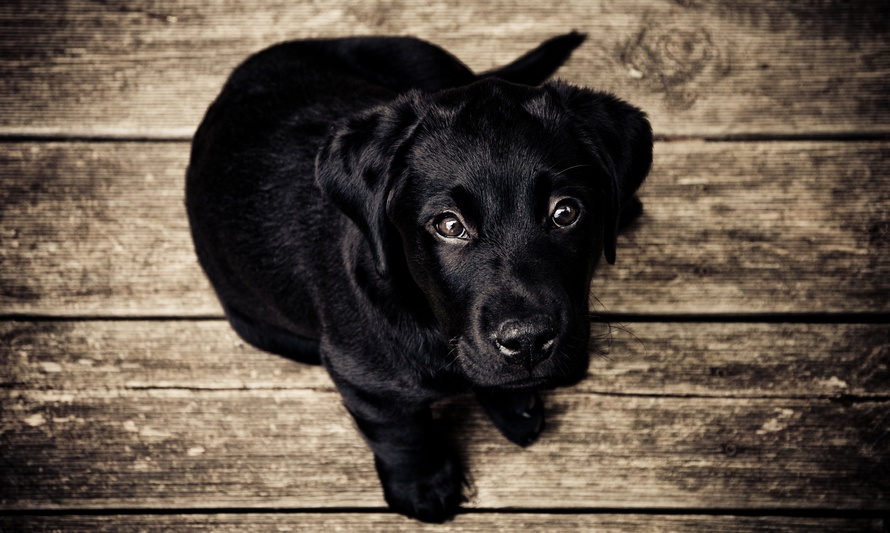

GoPup was founded by Matt Cordier and Chris Kitz in October 2015. Registered in Wisconsin, GoPup sells traditional products for man's best friend. The two of them have helped thousands of customers all over the world. GoPup went public in 2015 shortly after launch. GoPup has projected revenue of $14 million.
Avid dog trainer who has trained dogs on the national level. Matt enjoys breeding puppies for dog shows. On his free time he enjoys long walks on the beach with his dog Princess Peach, as well as his other 47 dogs. Matt is passionate and is the face of the brand.
Chris works on the operational side. He owns two dogs Jax and Elvis, both dobermans. He runs the company as CFO and essentially the Steve Wozniak of the business.
Copyright 2016